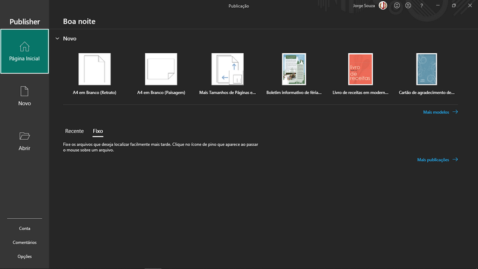
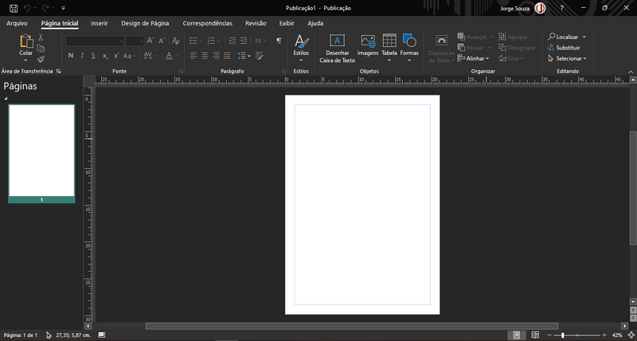

Vamos nos aprofundar em mais recursos de tipografia e layout estudando editoração eletrônica, que consiste no design de revistas, livros, panfletos, cardápios entre outros itens de papelaria. Os três softwares comerciais mais utilizados no mercado de editoração eletrônica são o Microsoft Publisher, o Adobe Indesign e o CorelDraw.
No início desta apostila estudamos design gráfico com um software gratuito para que todos pudessem ter acesso ao aprendizado e depois veremos como aplicar estes conceitos em ferramentas comerciais, no entanto, nesta etapa utilizaremos um software pago, isso porque a maioria dos computadores possui um pacote Office, e muitas pessoas o tem pelo fato dele vir instalado e licenciado por padrão ao comprar o aparelho. Caso você prefira utilizar um software gratuito e de código aberto pode utilizar o LibreOffice.
Tela Inicial do Microsoft Publisher:
Assim como outros aplicativos do pacote Office, o Publisher concentra todas as suas ferramentas na Faixa de Opções, ou Ribbon em inglês, que é o grande conjunto de ícones e opções que se encontra na parte superior da Área de Trabalho do programa. No centro da tela encontramos a página, onde faremos a editoração, e no lado esquerdo, a barra de páginas, onde podemos navegar entre as páginas do arquivo e as páginas-mestra, que explicaremos logo à frente. Como no Word ou Excel, os menus do Publisher dão acesso a diferentes conjuntos de opções da Ribbon, alguns menus novos são adicionados quando inserimos ou selecionamos elementos como imagens ou formas.
Área de Trabalho do Publisher:
Assim que iniciar o Publisher, você pode abrir um arquivo existente ou criar um novo. Na tela inicial, algumas opções de atalho estão disponíveis para criar documentos, como tamanhos de papel e arquivos de modelo prontos. Para selecionar um tamanho de papel dentre todas as opções basta clicar em Mais tamanhos de Páginas em Branco.
Seguindo a maneira de trabalho de outras aplicações de editoração, para escrevermos numa página do Publisher precisamos criar uma caixa de texto que é apenas um dos elementos gráficos que podemos inserir.